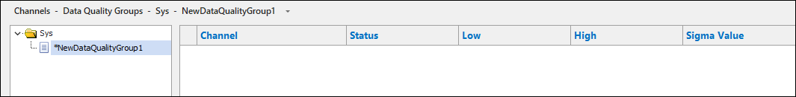
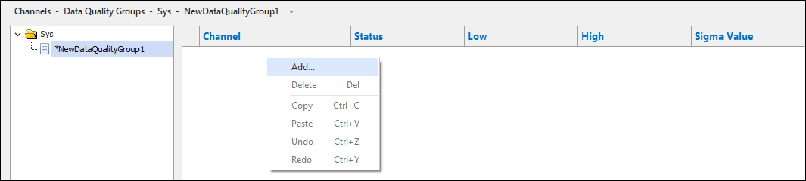

iTest User's Guide
The Data Quality feature is a runtime verification tool that enables you to define data quality limits for channels in your system. The channels are continuously monitored and if they exceed the defined limit, the violation is communicated via the interface. Data quality limits are different than safety limits, and are used in the following ways:
iTest continually monitors channels to determine whether their current values match a pre-defined rule. If the channel value violates the rule, the following actions are performed:
DQHandlerDefault, although this can be replaced by another procedure)The following evaluations used to determine the quality of the data:
To configure and use the Data Quality feature in SolutionBuilder, do the following:
Data Quality Fields Descriptions
| Value | Option | Description |
| Data Quality Type | High/Low | This type uses a high and low value to verify that the channel/value is within a certain range. |
| Above | The value that the channel or value should not go above. | |
| Below | The value that the channel or value should not go below. | |
| Between Tolerance in % | The percent value that the channel is within of another channel/value. | |
| Between Tolerance | The engineering unit value that the channel is within of another channel/value. | |
| Formula Evaluate to TRUE | When this data quality type is selected and the formula=zero, the channel value is good; if the formula=non-zero the channel value is bad. | |
| Data Quality Low | Channel/Numeric Value | This value is used to represent the low value for the Below and High/Low data quality types; it can be either a numeric value, a channel, or a formula. If this value is surpassed, the data quality monitor will inform you that your data quality is out of range. |
| Data Quality High | Channel/Numeric Value | This value is used to represent the high value for the Above and High/Low data quality types; it can be either a numeric value, a channel, or a formula. If this value is surpassed, the data quality monitor will inform you that your data quality is out of range. |
| Data Quality Setpoint | Channel/Numeric Value | For the Between Tolerance data quality type, this value represents the setpoint or the number the channel value is being compared to. |
| Data Quality Tolerance | Range | For the Between Tolerance data quality type, this value represents the range around the setpoint considered to be within tolerance. Depending on the option selected, this value represents the range of tolerance in either percentage or engineering units. Example: Assume you are configuring a quality check on CylTemp1 and you want to verify it is reading within 5% of CylTemp2. The Data Quality Setpoint value would be CylTemp2 and the Data Quality Tolerance (%) value would be 5. You could also verify CylTemp1 was reading within 5 degrees of CylTemp2 by selecting the Between Tolerance data quality type instead of Between Tolerance in %. |
| Data Quality Formula | Formula | If the formula evaluates to true (1), the data is in violation. If the formula evaluates to false (0), the data is valid. Example: If the formula speed > 100 is entered in the Data Quality Formula field and the actual speed of 100 is met or exceeded, a violation for this check will be triggered. |
| Data Quality Handler | Procedure Name | The name of the procedure that is called when the channel violates a data quality condition. This drop-down menu is populated by the DataQualityProcedureFilePath powertek.ini setting if this setting is present. If this setting is not present, then only the default procedure (DQHandlerDefault) is available in the drop-down menu; this procedure reports the name of the channel that has violated the data quality condition and when it was violated to Softpanel.For more information about the DataQualityProcedureFilePath powertek.ini setting, refer to its description in the Data Quality table. |
Data quality groups are used to define high and low data quality values during various stages of a test. For example, if your test included a warm-up and cool-down phase, your acceptable range of channel values would vary depending on the current phase. This feature uses a pass/fail mechanism, where the pass and fail ranges change at different operating points of the test. You can also use this feature to deactivate channel data quality. Data Quality groups are enabled with the DQGroupApply Data_Engine mailslot message.
Mailslot Message Syntax:
\\.\\mailslot\Data_Engine>>DQGroup Apply <GroupName>
Requirements
Data quality groups can be managed in SolutionBuilder by selecting Channels > Data Quality Groups from the menu. Right-click on a folder in the left pane, and select the Add option. This opens a blank version of the Data Quality Groups editor.
Data Quality Groups Editor

To add channels to the editor, right-click and select the Add... option. This opens the Channel Selection dialog, which allows you to select a channel to add. After the channel is added, use the descriptions provided in the table below to configure each column's value.
Adding New Channels

Data Quality Group Editor Descriptions
| Column | Description |
| Channel Name | The name of the channel in the data quality group. To be displayed in the drop-down of selectable channels, the channel must have data quality already enabled and the high/low setting type defined. |
| Status | The current status of the channel. Statuses include Active or Inactive. |
| Low | The channel's low value. When this value is exceeded, the data quality violation is triggered. Supported values include a numeric value, a channel/customer/module name, or a simple expression. |
| High | The channel's high value. When this value is exceeded, the data quality violation is triggered. Supported values include a numeric value, a channel/customer/module name, or a simple expression. |
| Sigma Value | The standard deviation value. This is a reference value used to calculate the low and high values set by external tools. This field cannot be blank; if this value is unnecessary for your tests, enter 0.000. |
The following right-click options are available in the Data Quality Groups editor:
Right-Click Options
| Option | Description |
| Left Pane | |
|---|---|
| Add | Adds a new data quality group. For more information, refer to the Adding a New Data Quality Group section. |
| Remove | Removes the selected data quality group. |
| Rename... | Launches the Rename dialog, which allows you to change the name of the data quality group. |
| Duplicate | Duplicates the selected data quality group. |
| Cut | Removes the selected data quality group and copies it to the clipboard. |
| Copy | Copies the selected data quality group to the clipboard. |
| Paste | Pastes the copied data quality group. |
| Undo | Undoes the last action. |
| Redo | Redoes the last undone action. |
| Editor | |
| Add... | Adds a new channel to the data quality group. |
| Delete | Removes the selected channel from the data quality group. |
| Copy | Copies the selected cell value to the clipboard. |
| Paste | Pastes the copied cell value. |
| Undo | Undoes the last action. |
| Redo | Redoes the last undone action. |